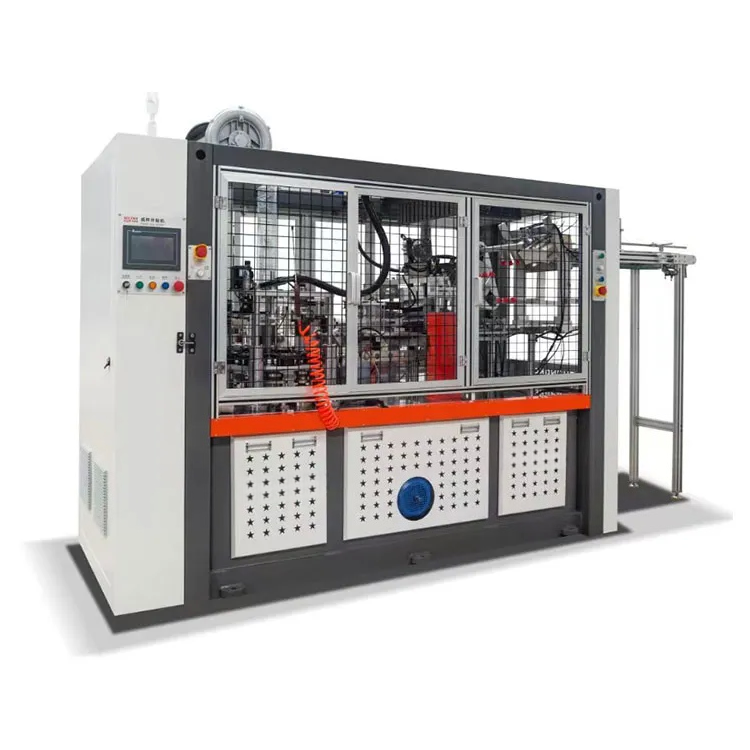

In today’s fast-paced world, the demand for disposable cups, particularly ripple cups, has surged due to their convenience and insulating properties. A high-speed automatic double wall machine for 4-16oz ripple cups is a specialized machine designed to produce these popular cups efficiently and in large quantities. These machines play a crucial role in the food and beverage industry by streamlining production, ensuring consistency, and delivering high-quality, insulated cups ideal for serving hot beverages like coffee, tea, and other drinks. Let’s dive into what makes these machines unique, how they work, and why they are essential for the production of ripple cups.

What Are Ripple Cups?
Ripple cups are a type of insulated paper cup that features a corrugated or textured outer wall, which helps to provide better heat insulation and grip. These cups are widely used in coffee shops, restaurants, and takeaway services because they allow customers to hold hot beverages comfortably without burning their hands.
The double-wall design of ripple cups consists of two layers: the inner cup that holds the liquid and the outer corrugated layer that provides insulation and a stylish look. The textured exterior also enhances the cup’s visual appeal and gives a premium feel.
Features of a High-Speed Automatic Double Wall Machine
A high-speed automatic double wall machine is engineered to produce ripple cups in the 4-16oz size range quickly and efficiently. These machines are designed with advanced technology to streamline production while maintaining high-quality output. Below are some of the key features:
1. High-Speed Production
These machines are capable of producing large quantities of cups per minute, typically in the range of 70-100 cups per minute, depending on the specific model and settings. This high-speed capability is crucial for meeting the growing demand in industries like coffee shops, fast food chains, and large-scale catering services.
2. Automatic Operation
One of the standout features is the fully automatic operation, which minimizes manual labor and reduces the risk of human error. The machine handles everything from feeding the paper material to forming the double wall and applying the ripple texture.
3. Double-Wall Structure
The machine is designed to create the double-wall structure that gives ripple cups their insulating properties. It does this by first forming the inner cup and then attaching the corrugated or textured outer wall seamlessly. This process ensures that each cup is uniform, durable, and provides excellent insulation.
4. Adjustable for Different Cup Sizes (4-16oz)
The versatility of the machine allows it to produce cups in various sizes, typically ranging from 4oz to 16oz. This flexibility is essential for manufacturers who cater to a variety of beverage services, from small espresso shots to larger-sized coffee drinks. The machine can be adjusted easily to switch between sizes without compromising speed or quality.
5. High Precision and Consistency
Precision is key in cup production to ensure that the cups are structurally sound and meet the required quality standards. A high-speed automatic double wall machine uses advanced sensors and control systems to monitor each step of the process, ensuring that every cup produced is consistent in size, shape, and quality.
6. Energy-Efficient and Cost-Effective
Modern machines are designed to be energy-efficient, reducing electricity consumption while maintaining high production levels. Additionally, by automating the entire process, manufacturers can save on labor costs and reduce waste, making the production of ripple cups more cost-effective.
How Does a High-Speed Automatic Double Wall Machine Work?
The operation of a high-speed automatic double wall machine for ripple cups involves several key stages, all performed automatically with minimal human intervention:
1. Feeding and Paper Cutting
The machine starts by feeding the raw material, typically high-quality food-grade paper, into the system. The paper is then cut into pre-determined shapes for the inner cup and outer ripple layer.
2. Forming the Inner Cup
The pre-cut paper is rolled and shaped into the inner wall of the cup. The machine forms the cylindrical body and seals the sides to create the basic cup structure. The bottom of the cup is then attached and sealed to ensure it’s leak-proof.
3. Forming the Ripple Outer Wall
Once the inner cup is formed, the outer ripple paper layer is created. This layer is corrugated or embossed to provide the ripple texture, which enhances both the insulation and the grip of the cup. The outer layer is then wrapped around the inner cup.
4. Gluing and Sealing
The outer ripple layer is glued and sealed securely onto the inner cup, creating the double-wall structure. The high-speed machine ensures that the glue is applied evenly and that the outer wall adheres tightly, preventing any gaps or loose edges.
5. Finishing and Stacking
Once the cups are fully formed, they are ejected from the machine, inspected for quality, and stacked in uniform groups for packaging. The entire process is automated, ensuring that the final product is ready for distribution with minimal manual handling.
Why Is a High-Speed Automatic Double Wall Machine Important?
The production of ripple cups is essential for many businesses, especially those in the food and beverage industry. A high-speed automatic double wall machine offers numerous advantages:
- Efficiency and Scalability: The ability to produce large volumes of cups in a short period makes these machines ideal for companies that need to scale up production to meet high demand.
- Consistency and Quality: With automated processes, manufacturers can ensure that every cup meets high-quality standards. This is crucial for maintaining brand reputation and customer satisfaction.
- Cost Savings: Automation reduces labor costs and minimizes material waste, making the production process more economical. Energy-efficient machines also contribute to lower operational costs.
- Flexibility: The ability to produce various sizes of ripple cups from 4oz to 16oz means manufacturers can cater to a broader market without needing separate machines for different cup sizes.
A high-speed automatic double wall machine for 4-16oz ripple cups is an essential tool in the production of high-quality, insulated ripple cups that are perfect for hot beverages. Its automation, precision, and efficiency make it invaluable for businesses in the food and beverage industry, ensuring that they can meet the growing demand for disposable cups while maintaining top-notch quality. Whether for a small coffee shop or a large-scale manufacturer, investing in this type of machine provides a reliable solution for high-volume, cost-effective ripple cup production.
Jiangsu KIWL Machinery Manufacturing Group Co., Ltd is located in Zhangjiagang City, Jiangsu Province, China. We specialize in manufacturing high-speed paper cup machines, full servo paper cup machines, paper bowl machines, salad bowl machines, double-wall machines, coffee cup machines. We have more than 10 years of experience in this domain. Explore our full range of products on our website at https://www.cupmakingmachines.com. For any inquiries, please reach out to us at vicky@goldencup-machine.com.
We use cookies to offer you a better browsing experience, analyze site traffic and personalize content. By using this site, you agree to our use of cookies.
Privacy Policy